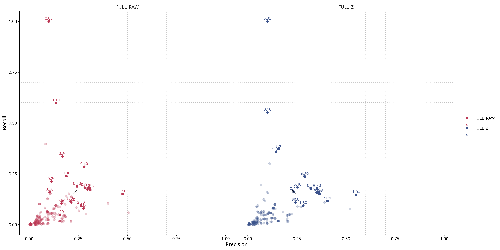
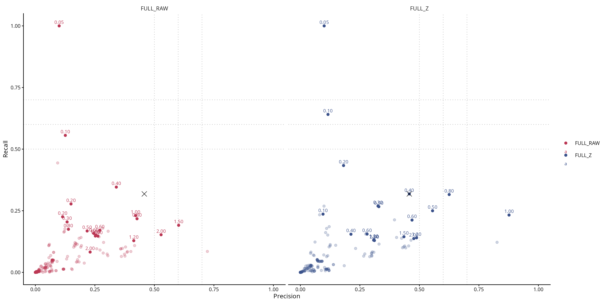
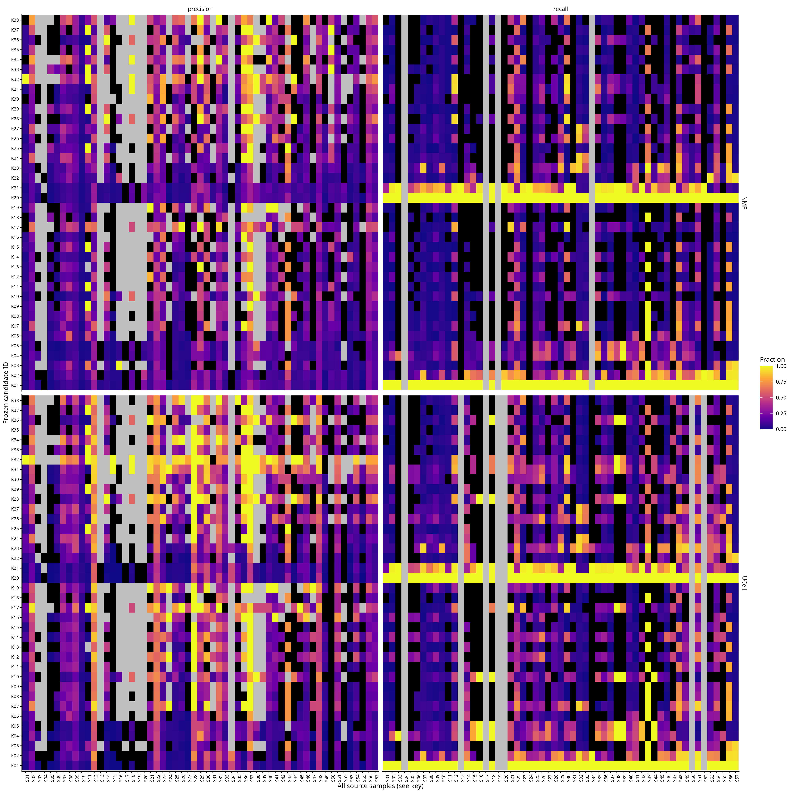
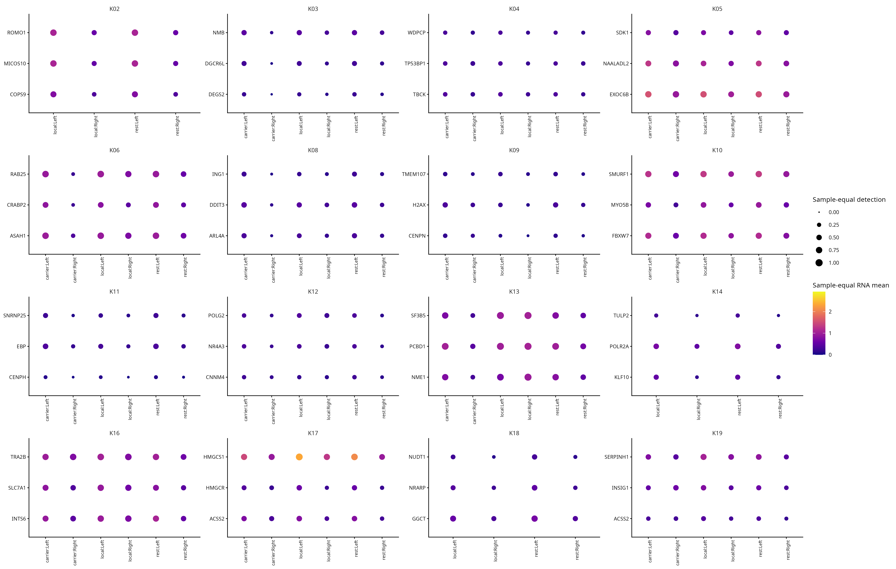
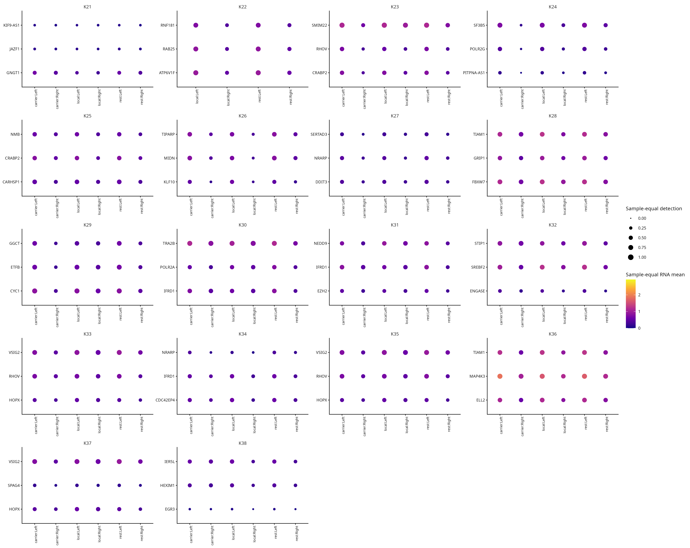
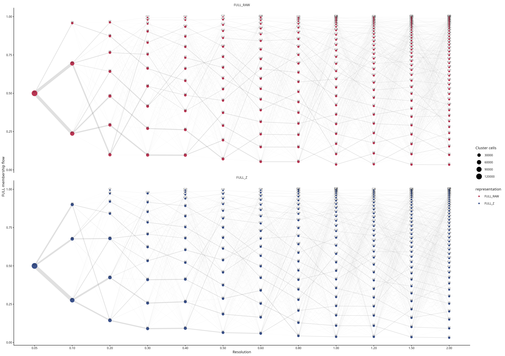
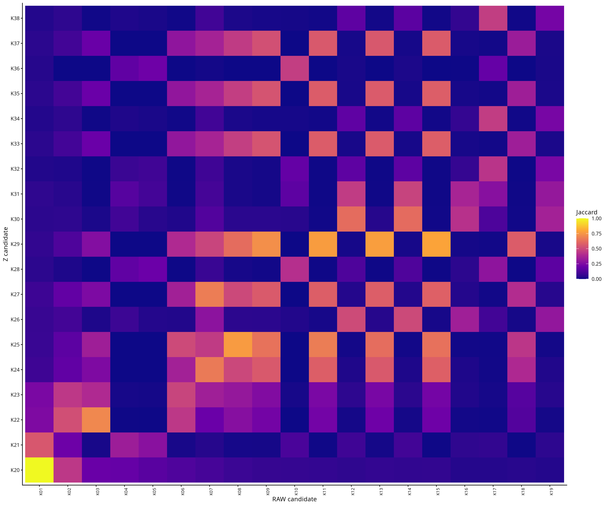
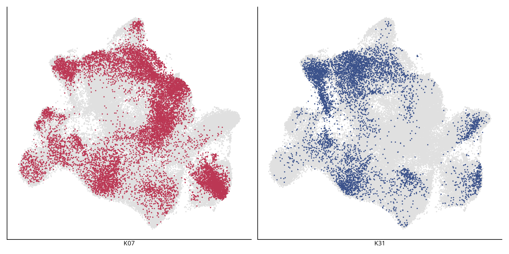

完成日期：2026-10-09；目录：/home/data/t070721/codex_workspace/Bladder Metabolism/mp10_resolution_scan_v3
主要结果：NMF-high最优单群为FULL_RAW r0.40 C4（K07），UCell-high最优为FULL_Z r0.80 C13（K31）。RAW与Z的优劣依赖high定义。前者P/R约28.0%/28.5%；后者UCell P/R约62.5%/31.6%。没有扫描单群同时跨过50% P和50% R参考线，但该线不是生物学通过门槛。
有可解释的候选并不等于覆盖了完整MP10程序。来源偏倚、局部marker资格/功效以及成员变化仍限制单一亚群解释；不因UMAP岛形状下结论。
| 候选 | 细胞 | NMF P/R/F1 | UCell P/R/F1 | 选择 | rest/local pairs | 展示marker |
|---|---|---|---|---|---|---|
| 旧 FULL_Z r0.4 C8 | 8603 | 23.41% / 16.28% / 0.192 | 45.76% / 31.82% / 0.375 | 固定基线 | v2 28 / 按对照 | 见v2 |
| K07 FULL_RAW_r0.40__C4 | 12585 | 28.02% / 28.50% / 0.283 | 34.01% / 34.59% / 0.343 | NMF;UCell；全局F1冠军 | 23 / 3 | 无符合展示规则的基因 |
| K31 FULL_Z_r0.80__C13 | 6249 | 35.27% / 17.82% / 0.237 | 62.52% / 31.58% / 0.42 | NMF;UCell；全局F1冠军 | 24 / 11 | IFRD1;NEDD9;EZH2 |
24套分区全部完成，38个冻结候选、108个固定对照（105个精确模型键）。模型状态：{'COMPLETE': 103, 'NOT_TESTABLE': 5}。08_review/24_partition_overview.tsv · 08_review/FINAL_CANDIDATES.tsv
K07的NMF P、R均高于旧C8；但UCell P下降约11.75个百分点，R仅提高约2.77个百分点，UCell F1下降。K31的NMF P、R亦提高；UCell P提高约16.76个百分点，但R下降约0.24个百分点（3937降至3907个UCell-high细胞）。因此不能把F1提高描述成两项无代价改善，也不能把两名候选并集混入单群排行榜。
全群及未获冠军的Pareto群均保留：02_coverage/all_clusters_two_high.tsv · 02_coverage/PR_Pareto_fronts.tsv · 02_coverage/old_baselines.tsv
涉及45个sample、5个dataset。最大sample PRJNA662018|PRJNA662018_PRJNA662018_P7T7占42.05%；最大dataset PRJNA662018占50.38%。来源构成：Normal:2833;MIBC:7734;NMIBC:2018。
| high | n_P_valid | n_P_NA | n_R_valid | n_R_NA | n_high_zero_recall | P_sample_equal | R_sample_equal |
|---|---|---|---|---|---|---|---|
| NMF | 45 | 12 | 53 | 4 | 17 | 0.228095041585979 | 0.177061820195376 |
| UCell | 45 | 12 | 50 | 7 | 13 | 0.324305272406169 | 0.238074362804474 |
| field | high | n_valid | n_P_up | n_R_up | n_joint_up | n_NA |
|---|---|---|---|---|---|---|
| dataset | NMF | 5 | 4 | 3 | 2 | 0 |
| dataset | UCell | 5 | 2 | 3 | 1 | 0 |
| sample | NMF | 42 | 19 | 19 | 9 | 15 |
| sample | UCell | 42 | 12 | 16 | 4 | 15 |
| source | NMF | 3 | 2 | 2 | 2 | 0 |
| source | UCell | 3 | 0 | 1 | 0 | 0 |
涉及47个sample、5个dataset。最大sample CNP0000460|CNP0000460_P07T占25.08%；最大dataset CNP0000460占65.59%。来源构成：Normal:711;MIBC:3467;NMIBC:2071。
| high | n_P_valid | n_P_NA | n_R_valid | n_R_NA | n_high_zero_recall | P_sample_equal | R_sample_equal |
|---|---|---|---|---|---|---|---|
| NMF | 47 | 10 | 53 | 4 | 16 | 0.301377823333184 | 0.138382150177147 |
| UCell | 47 | 10 | 50 | 7 | 7 | 0.539879084053788 | 0.302143053888717 |
| field | high | n_valid | n_P_up | n_R_up | n_joint_up | n_NA |
|---|---|---|---|---|---|---|
| dataset | NMF | 5 | 5 | 3 | 3 | 0 |
| dataset | UCell | 5 | 5 | 3 | 3 | 0 |
| sample | NMF | 44 | 22 | 18 | 12 | 13 |
| sample | UCell | 44 | 29 | 21 | 18 | 13 |
| source | NMF | 3 | 3 | 2 | 2 | 0 |
| source | UCell | 3 | 3 | 2 | 2 | 0 |
K07在NMF-high的53个有high样本中17个零召回，K31在UCell-high的50个有high样本中7个零召回。不能仅以“出现于多个dataset”称普遍改善。NA分母与零召回均未被marker门槛过滤。02_coverage/all_candidate_source_vs_C8.tsv · 02_coverage/candidate_source_coverage.tsv
展示marker：无符合展示规则基因；非输入marker：无。状态：no_gene_passes_rest_and_local_gates。固定最近竞争群为C12，额外carrier为C2。
| comparison_id | control_type | control_cluster | n_pairs | n_datasets | status | reason |
|---|---|---|---|---|---|---|
| K07_carrier | carrier | C2 | 22 | 4 | COMPLETE | paired QL fitted |
| K07_rest | rest | rest | 23 | 4 | COMPLETE | paired QL fitted |
| K07_local | local | C12 | 3 | 2 | COMPLETE | paired QL fitted |
无可评估结果；见状态表。
| control_type | function_family | pathway | NES | padj | leading_edge_input_n | leading_edge_n |
|---|---|---|---|---|---|---|
| local | fatty_acid | C5::GOBP_FATTY_ACID_DERIVATIVE_METABOLIC_PROCESS | 2.09786720445553 | 0.00289770114942529 | 4 | 18 |
| local | other_lipid | C5::GOBP_LIPID_CATABOLIC_PROCESS | 1.77015875587727 | 0.00289770114942529 | 4 | 61 |
| local | other_lipid | C5::GOBP_LIPID_BIOSYNTHETIC_PROCESS | 1.58010595927023 | 0.00289770114942529 | 15 | 111 |
| local | other_lipid | C2::REACTOME_METABOLISM_OF_LIPIDS | 1.54679775632961 | 0.00289770114942529 | 17 | 113 |
| local | proliferation | C5::GOBP_MEIOSIS_I_CELL_CYCLE_PROCESS | 2.09395535488052 | 0.00289770114942529 | 3 | 22 |
| local | proliferation | C2::REACTOME_CELL_CYCLE_MITOTIC | 1.59495177362131 | 0.00289770114942529 | 15 | 113 |
| local | proliferation | C2::REACTOME_CELL_CYCLE | 1.59466786860513 | 0.00289770114942529 | 17 | 146 |
| local | fatty_acid | C5::GOBP_FATTY_ACID_METABOLIC_PROCESS | 1.6275420712213 | 0.0036408837323678 | 11 | 59 |
| local | response_stress | C2::REACTOME_DNA_DAMAGE_TELOMERE_STRESS_INDUCED_SENESCENCE | 2.02428791000874 | 0.00418455131777476 | 2 | 19 |
| local | cholesterol_sterol | C2::REACTOME_REGULATION_OF_CHOLESTEROL_BIOSYNTHESIS_BY_SREBP_SREBF | 1.93113237374135 | 0.00639943594012044 | 7 | 24 |
| local | fatty_acid | C5::GOBP_VERY_LONG_CHAIN_FATTY_ACID_METABOLIC_PROCESS | 2.0269461008041 | 0.00883952152037979 | 3 | 11 |
| local | response_stress | C2::REACTOME_OXIDATIVE_STRESS_INDUCED_SENESCENCE | 1.70866710592216 | 0.0161401364351641 | 3 | 26 |
| local | cholesterol_sterol | C5::GOBP_ZYMOSTEROL_METABOLIC_PROCESS | 1.89566050855988 | 0.0194588064544768 | 4 | 5 |
| local | cholesterol_sterol | C2::REACTOME_CHOLESTEROL_BIOSYNTHESIS | 1.93932881531692 | 0.0217093684330446 | 7 | 13 |
| local | response_stress | C2::REACTOME_ACTIVATION_OF_ATR_IN_RESPONSE_TO_REPLICATION_STRESS | 1.8847472095866 | 0.0331718417918556 | 1 | 18 |
| rest | fatty_acid | C5::GOBP_FATTY_ACID_BIOSYNTHETIC_PROCESS | 2.03089772911239 | 0.00190836120401338 | 9 | 44 |
| rest | fatty_acid | C2::REACTOME_FATTY_ACID_METABOLISM | 1.85133581441431 | 0.00190836120401338 | 5 | 53 |
| rest | fatty_acid | C5::GOBP_FATTY_ACID_METABOLIC_PROCESS | 1.67547472801574 | 0.00190836120401338 | 15 | 111 |
不限功能关键词的vs-rest正向前列通路：
| pathway | NES | padj | leading_edge_input_n | leading_edge_n |
|---|---|---|---|---|
| C2::REACTOME_EUKARYOTIC_TRANSLATION_ELONGATION | 3.38303763608012 | 0.00190836120401338 | 5 | 85 |
| C5::GOBP_OXIDATIVE_PHOSPHORYLATION | 3.32017957588703 | 0.00190836120401338 | 3 | 80 |
| C2::REACTOME_EUKARYOTIC_TRANSLATION_INITIATION | 3.30025494655763 | 0.00190836120401338 | 5 | 94 |
| C2::REACTOME_SRP_DEPENDENT_COTRANSLATIONAL_PROTEIN_TARGETING_TO_MEMBRANE | 3.29457802178598 | 0.00190836120401338 | 6 | 93 |
| C2::REACTOME_MITOCHONDRIAL_TRANSLATION_ELONGATION | 3.29117763887684 | 0.00190836120401338 | 1 | 67 |
| C2::REACTOME_RESPONSE_OF_EIF2AK4_GCN2_TO_AMINO_ACID_DEFICIENCY | 3.27079651816391 | 0.00190836120401338 | 7 | 83 |
| comparison_id | n_pairs | nCount_positive | nFeature_positive | nCount_median_delta | nFeature_median_delta | mt_median_delta |
|---|---|---|---|---|---|---|
| K07_rest | 23 | 23 | 23 | 4154.14800066565 | 842.642056822729 | -0.602010081869823 |
| K07_local | 3 | 1 | 1 | -2056.18768768769 | -345.552102102102 | 1.84628477179768 |
| K07_carrier | 22 | 22 | 22 | 8203.82170930189 | 1689.67630979499 | -2.73458015696213 |
展示marker：IFRD1;NEDD9;EZH2；非输入marker：IFRD1;NEDD9;EZH2。状态：paired_local_supported。固定最近竞争群为C18，额外carrier为C8。
| comparison_id | control_type | control_cluster | n_pairs | n_datasets | status | reason |
|---|---|---|---|---|---|---|
| K31_carrier | carrier | C8 | 13 | 4 | COMPLETE | paired QL fitted |
| K31_rest | rest | rest | 24 | 4 | COMPLETE | paired QL fitted |
| K31_local | local | C18 | 11 | 3 | COMPLETE | paired QL fitted |
| gene_id | log2FC | FDR | pct_left | pct_right | positive_fraction | local_log2FC | local_FDR | carrier_log2FC | carrier_FDR | in_any_14MP_top50 | function_family | selection_reason |
|---|---|---|---|---|---|---|---|---|---|---|---|---|
| IFRD1 | 1.22853335285153 | 3.95932612646517e-11 | 0.649957155462725 | 0.41108515569331 | 1 | 0.679066964665728 | 0.00031342775658176 | 1.09250136103929 | 4.83564775233514e-06 | FALSE | unclassified | passes rest and nearest-local fixed gates; non-input priority, diverse gene prefix/function annotations |
| NEDD9 | 0.951279653678382 | 2.61693137005664e-10 | 0.591364534403475 | 0.423518344352642 | 1 | 0.858284591868872 | 0.00027450800685391 | 1.37708599433106 | 1.03922885143504e-05 | FALSE | response_stress | passes rest and nearest-local fixed gates; non-input priority, diverse gene prefix/function annotations |
| EZH2 | 1.07178815737988 | 2.44236747314657e-10 | 0.449630242274884 | 0.293783452601806 | 1 | 0.774168840425374 | 0.00116486615502446 | 1.11563572969376 | 2.2037883162483e-06 | FALSE | response_stress;proliferation;epithelial | passes rest and nearest-local fixed gates; non-input priority, diverse gene prefix/function annotations |
| control_type | function_family | pathway | NES | padj | leading_edge_input_n | leading_edge_n |
|---|---|---|---|---|---|---|
| local | response_stress | C5::GOBP_RESPONSE_TO_TRANSFORMING_GROWTH_FACTOR_BETA | 2.15418147978171 | 0.00150871080139373 | 9 | 76 |
| local | response_stress | C5::GOBP_RESPONSE_TO_GROWTH_FACTOR | 1.70226820773995 | 0.00150871080139373 | 7 | 117 |
| local | response_stress | C5::GOBP_CELLULAR_RESPONSE_TO_HORMONE_STIMULUS | 1.62886880813782 | 0.00150871080139373 | 9 | 113 |
| local | epithelial | C5::GOBP_REGULATION_OF_EPITHELIAL_TO_MESENCHYMAL_TRANSITION | 2.09220653613705 | 0.00173269233736071 | 2 | 14 |
| local | epithelial | C5::GOBP_EPITHELIAL_CELL_DEVELOPMENT | 1.79134391779232 | 0.0018855639985304 | 3 | 56 |
| local | cholesterol_sterol | C2::REACTOME_NR1H3_NR1H2_REGULATE_GENE_EXPRESSION_LINKED_TO_CHOLESTEROL_TRANSPORT_AND_EFFLUX | 2.08893308790693 | 0.00477751607318362 | 0 | 12 |
| local | epithelial | C5::GOBP_EPITHELIAL_TO_MESENCHYMAL_TRANSITION | 1.8073528803813 | 0.00900618684941755 | 2 | 18 |
| local | other_lipid | C2::REACTOME_ROLE_OF_PHOSPHOLIPIDS_IN_PHAGOCYTOSIS | 1.96672302337729 | 0.0197607295339433 | 0 | 9 |
| local | proliferation | C2::REACTOME_MITOTIC_TELOPHASE_CYTOKINESIS | 1.89115923996257 | 0.0393861935958093 | 0 | 5 |
| rest | other_lipid | C5::GOBP_POSITIVE_REGULATION_OF_LIPID_BIOSYNTHETIC_PROCESS | 1.89958102294844 | 0.00204411764705882 | 5 | 18 |
| rest | response_stress | C5::GOBP_REGULATION_OF_CELLULAR_RESPONSE_TO_HEAT | 2.52870298971826 | 0.00204411764705882 | 2 | 9 |
| rest | epithelial | C5::GOBP_NEGATIVE_REGULATION_OF_EPITHELIAL_CELL_DIFFERENTIATION | 2.29339118062185 | 0.00232498828915961 | 2 | 21 |
| rest | cholesterol_sterol | C5::GOBP_ZYMOSTEROL_METABOLIC_PROCESS | 2.27898598681635 | 0.0033123745253952 | 7 | 9 |
| rest | other_lipid | C5::GOBP_POSITIVE_REGULATION_OF_LIPID_METABOLIC_PROCESS | 1.69337008386618 | 0.00423189992570861 | 5 | 36 |
| rest | response_stress | C5::GOBP_MUSCLE_HYPERTROPHY_IN_RESPONSE_TO_STRESS | 2.29604579840142 | 0.00644858315202928 | 1 | 8 |
| rest | epithelial | C5::GOBP_REGULATION_OF_EPITHELIAL_CELL_DIFFERENTIATION | 1.53881030136005 | 0.00891652549109662 | 4 | 30 |
| rest | epithelial | C5::GOBP_KIDNEY_EPITHELIUM_DEVELOPMENT | 1.54156686229765 | 0.0134683803128446 | 4 | 33 |
| rest | response_stress | C2::REACTOME_REGULATION_OF_HSF1_MEDIATED_HEAT_SHOCK_RESPONSE | 1.63747845246948 | 0.0136276796345441 | 7 | 20 |
不限功能关键词的vs-rest正向前列通路：
| pathway | NES | padj | leading_edge_input_n | leading_edge_n |
|---|---|---|---|---|
| C2::REACTOME_NGF_STIMULATED_TRANSCRIPTION | 3.07106756632423 | 0.00204411764705882 | 10 | 22 |
| C5::GOBP_REGULATION_OF_T_HELPER_17_CELL_DIFFERENTIATION | 2.5327382912707 | 0.00204411764705882 | 2 | 8 |
| C5::GOBP_REGULATION_OF_CELLULAR_RESPONSE_TO_HEAT | 2.52870298971826 | 0.00204411764705882 | 2 | 9 |
| C2::REACTOME_NUCLEAR_EVENTS_KINASE_AND_TRANSCRIPTION_FACTOR_ACTIVATION | 2.52100044628898 | 0.00204411764705882 | 10 | 26 |
| C5::GOBP_POSITIVE_REGULATION_OF_T_HELPER_CELL_DIFFERENTIATION | 2.51991144787777 | 0.00204411764705882 | 2 | 6 |
| C2::REACTOME_SLC_MEDIATED_TRANSPORT_OF_AMINO_ACIDS | 2.49096242285011 | 0.00204411764705882 | 0 | 11 |
| comparison_id | n_pairs | nCount_positive | nFeature_positive | nCount_median_delta | nFeature_median_delta | mt_median_delta |
|---|---|---|---|---|---|---|
| K31_rest | 24 | 10 | 11 | -975.376020481719 | -62.4548777863902 | 1.70786385329922 |
| K31_local | 11 | 0 | 0 | -6046.56462538643 | -980.780346426623 | 1.28843733298785 |
| K31_carrier | 13 | 0 | 0 | -6729.20427229347 | -985.501445183841 | 2.22397233139618 |
K31的IFRD1、NEDD9、EZH2均不属于14MP输入基因；vs-rest在24/24样本表达更高。最近竞争群为同分区C18：log2FC分别约0.679、0.858、0.774，FDR约0.000313、0.000275、0.00116，方向分别10/11、11/11、9/11。相对额外carrier C8也保持正效应，仍是同批发现RNA而非独立验证。
K31前列功能是转录/应答（如NGF-stimulated transcription、cellular response to heat），并有sterol biosynthetic process支持（NES约1.601，FDR约0.0448）；脂肪酸相关正向条目未达到FDR0.05。GO中出现免疫/分化等名称可能由共享信号基因贡献，不能据此把冻结上皮细胞改注释成T细胞或其他细胞类型；应结合leading edge审阅。EZH2入选也不等于证明该群是增殖亚群。
K07没有基因同时满足rest与最近局部对照的展示门槛；其vs-rest前列正向通路包括翻译与氧化磷酸化，不能只强调脂质条目。K07最近竞争群只有3对，局部区分的功效有限；其vs-rest的23对中nCount/nFeature全部更高。K31相对最近竞争群11对中nCount/nFeature全部更低。TMM与配对设计不保证这些与状态相关的检测差异已消失。展示基因必须结合完整效应、检测率差、方向和carrier表审阅，不能仅凭P值或RNA检出判断特异。
若局部表没有满足门槛的基因，意味着本次规则下缺少足够证据，不等于没有表达差异。通路名须区分脂肪酸、胆固醇/甾醇、其他脂质、应答/应激、增殖和上皮背景；FDR显著类别不能直接升级为机制。08_review/all_shortlists.tsv · 08_review/function_family_summary.tsv · 08_review/marker_plot_availability.tsv · 08_review/display_marker_counterexamples.tsv
| candidate_A | candidate_B | type | intersection | Jaccard | fraction_A | fraction_B |
|---|---|---|---|---|---|---|
| K07 | K08 | adjacent_resolution | 8001 | 0.566201967305923 | 0.635756853396901 | 0.838064313396879 |
| K06 | K07 | adjacent_resolution | 7990 | 0.396132870599901 | 0.513001605136437 | 0.634882796980532 |
| K05 | K07 | adjacent_resolution | 107 | 0.00340060384554267 | 0.00563543477115922 | 0.00850218514104092 |
| K07 | K27 | RAW_Z | 9086 | 0.672887506480041 | 0.72197059992054 | 0.908236705317873 |
| K07 | K24 | RAW_Z | 9097 | 0.66454817736869 | 0.722844656336909 | 0.891775316145476 |
| K07 | K29 | RAW_Z | 6375 | 0.487870207392669 | 0.506555423122765 | 0.929706868893102 |
| candidate_A | candidate_B | type | intersection | Jaccard | fraction_A | fraction_B |
|---|---|---|---|---|---|---|
| K30 | K31 | adjacent_resolution | 4567 | 0.62750755702116 | 0.816118656182988 | 0.730836933909426 |
| K31 | K32 | adjacent_resolution | 3127 | 0.488288569643973 | 0.500400064010242 | 0.952772699573431 |
| K29 | K31 | adjacent_resolution | 0 | 0 | 0 | 0 |
| K14 | K31 | RAW_Z | 4240 | 0.482915717539863 | 0.626199970462266 | 0.678508561369819 |
| K12 | K31 | RAW_Z | 3935 | 0.45660245996751 | 0.624206852791878 | 0.629700752120339 |
| K16 | K31 | RAW_Z | 2708 | 0.366441136671177 | 0.703559366069109 | 0.433349335893743 |
K07与旧C8 Jaccard约0.286；K31与旧C8约0.436，且K31主要与旧r0.6 C12重叠（Jaccard约0.628），与C16几乎不重叠。群名相同或resolution相同不是成员一致性证据。以上成员变化与不同high冠军分离，更符合MP10跨多个状态分布、边界受尺度/分辨率影响的解释；当前尚不足以确立覆盖充分且稳定的单一亚群。
06_stability/adjacent_cluster_flows.tsv · 06_stability/candidate_Jaccard.tsv · 06_stability/candidate_Jaccard_and_profile_concordance.tsv · 06_stability/candidate_pair_shared_sample_marker_directions.tsv · 08_review/shared_eligible_samples.tsv · 08_review/shared_sample_marker_directions.tsv
关键候选和旧C8的共同合格sample数：19。仅在这些真实共同sample上重述表达方向，未重拟合/挑样本提升FDR。
| candidate_id | gene_id | n_common_samples | mean_delta | positive_fraction |
|---|---|---|---|---|
| K31 | EZH2 | 19 | 0.233093152395772 | 1 |
| K31 | IFRD1 | 19 | 0.418938540859212 | 1 |
| K31 | NEDD9 | 19 | 0.358758617520702 | 1 |
| K07 | EZH2 | 19 | 0.0879492101533807 | 0.789473684210526 |
| K07 | IFRD1 | 19 | 0.274939994346768 | 1 |
| K07 | NEDD9 | 19 | 0.0897709269242698 | 0.736842105263158 |
| old_C8 | EZH2 | 19 | 0.149709457985341 | 0.947368421052632 |
| old_C8 | IFRD1 | 19 | 0.361564289958874 | 1 |
| old_C8 | NEDD9 | 19 | 0.285594889508116 | 1 |
实际输出（含必要缓存、打包前）：4.14 GiB；RNA聚合日志记录的R分配堆峰值约29.71 GiB（不是OS RSS）。模型重型步骤顺序执行，BLAS/fgsea各1线程，原RNA只加载一次。
| candidate_id | quantile | cutoff | n_high | precision | recall | F1 |
|---|---|---|---|---|---|---|
| K07 | 0.8 | 0.218880976602238 | 24742 | 0.54445768772348 | 0.276938000161668 | 0.367133710182977 |
| K07 | 0.95 | 0.303370634113259 | 6186 | 0.19880810488677 | 0.404461687681862 | 0.266581428799744 |
| K31 | 0.8 | 0.218880976602238 | 24742 | 0.782845255240839 | 0.197720475305149 | 0.315704559388209 |
| K31 | 0.95 | 0.303370634113259 | 6186 | 0.465194431108978 | 0.469932104752667 | 0.467551266586249 |
q80/q95仅描述固定推荐候选，未参与排名或更换候选。原患者映射未独立确认，样本重复不等于独立患者；未新增空间、CNV、预后、机制或外部验证。所有DE、富集及非输入marker均属于同批发现RNA；单比较BH不是整个分辨率搜索的错误率控制。
| comparison_id | partition | cluster | control_cluster | n_pairs | status | reason |
|---|---|---|---|---|---|---|
| K01_rest | FULL_RAW_r0.05 | C1 | rest | 0 | NOT_TESTABLE | no_control_cells |
| K01_local | FULL_RAW_r0.05 | C1 | NA | 0 | NOT_TESTABLE | no_control_cells |
| K20_rest | FULL_Z_r0.05 | C1 | rest | 0 | NOT_TESTABLE | no_control_cells |
| K20_local | FULL_Z_r0.05 | C1 | NA | 0 | NOT_TESTABLE | no_control_cells |
| K13_local | FULL_RAW_r1.00 | C8 | C23 | 1 | NOT_TESTABLE | fewer_than_3_pairs |
04_pseudobulk_markers/model_summary.tsv · 00_audit/old_partition_reproduction.tsv · FINAL_ACCEPTANCE.tsv







